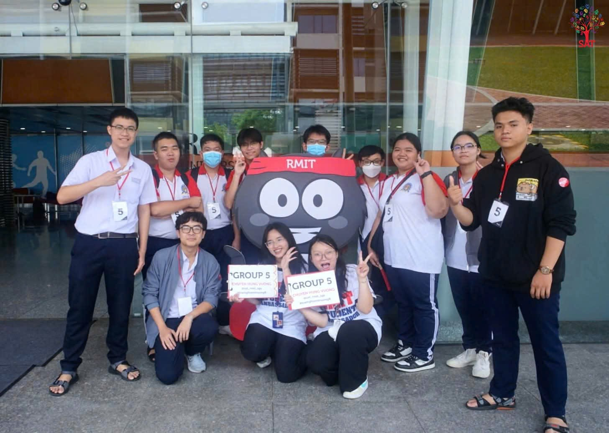
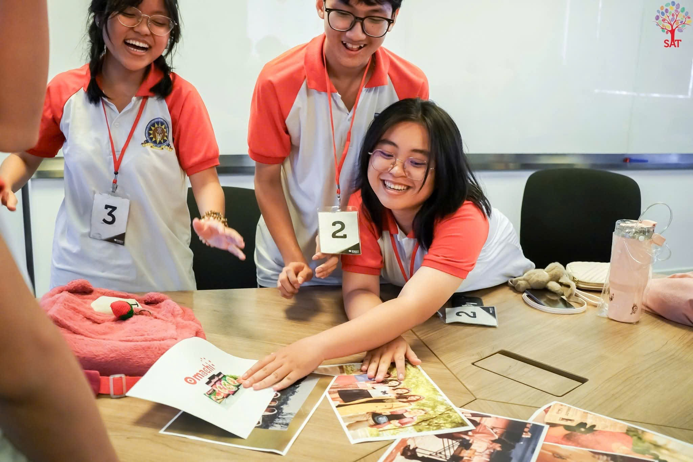
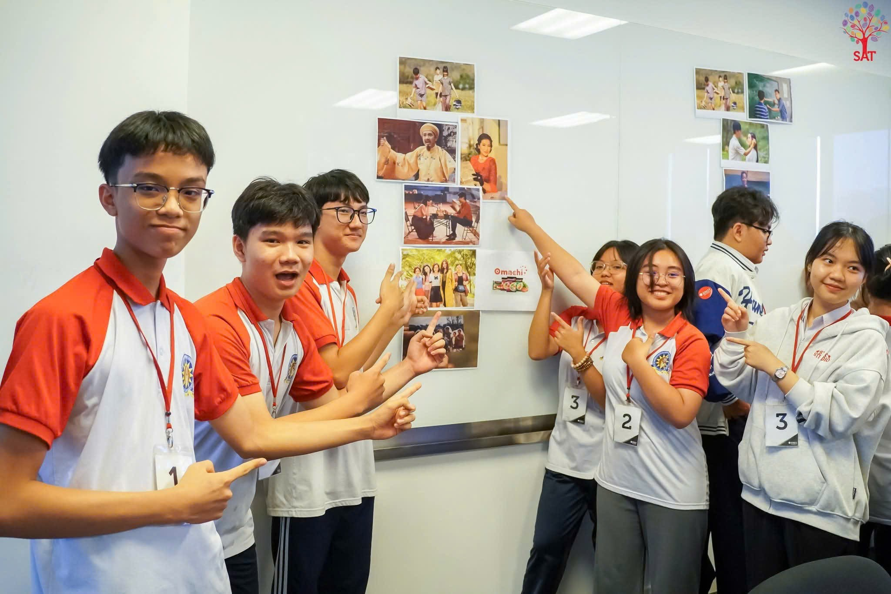
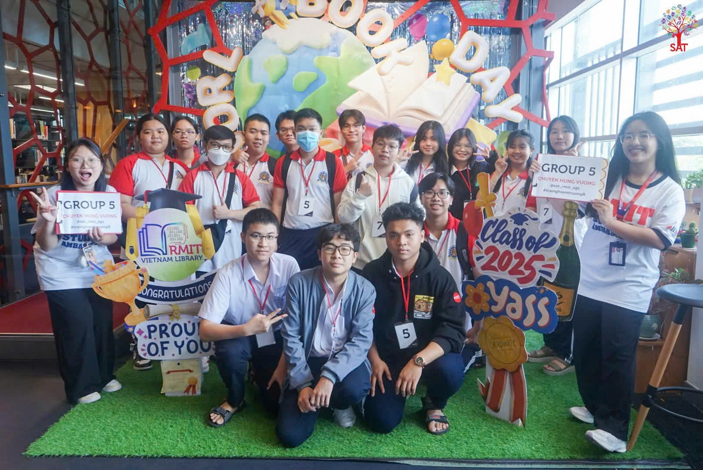
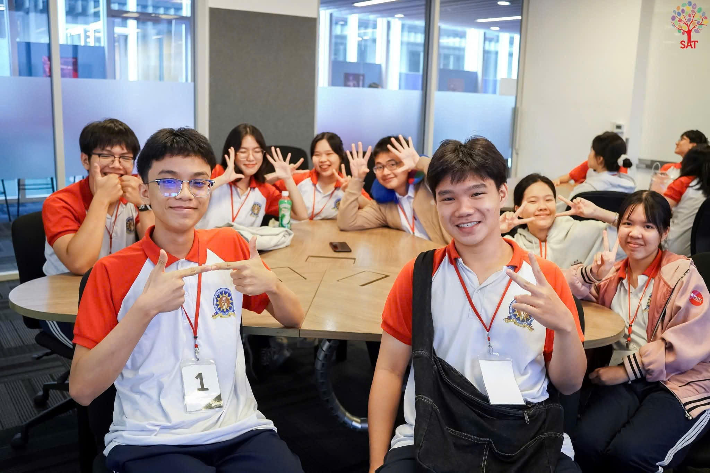

Có những chuyến đi không chỉ để nhìn ngắm, mà để thay đổi thế giới quan của chúng ta. Chuyến tham quan RMIT vừa qua cùng các bạn không đơn thuần là một buổi hướng nghiệp, mà là khoảnh khắc mình thấy những giấc mơ bắt đầu rõ hình, rõ dạng.




